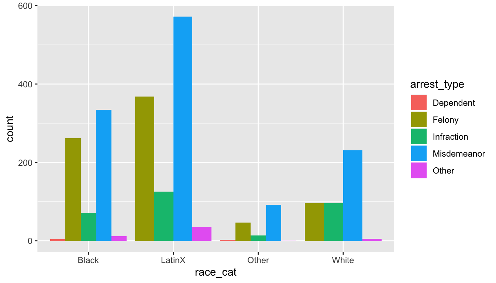

AFAM 188: R 3 R Assignment 1
Please add your name and email to the below lines:
Name:
Email:
3.0.1 Instructions
Complete the R coding challenges and questions in RStudio Cloud Project https://rstudio.cloud/spaces/31925/project/707259 in the r-assignment-1.R file. Save that file as you work. You will have until 11/20 by 5pm. If you encounter any problems, please come to
office hours on 11/12 or 11/19 from 2-5pm in the Data Science Center, 21536 YRL or email us at datascience@ucla.edu. This
assignment is worth 32 points or 4 points per question.
3.0.2 1. Running R code
Replace “Your name” to your own name and run the blow code.
3.0.3 2. Loading the installed package tidyverse.
In class, we used the function library() to load the package tidyverse.
Below fill in the blank below that that loads tidyverse and run the code:
3.0.4 3. Getting help in R
tidyverse provides us with a function called read_csv.
Run the command below to get help on read_csv and answer the question below:
What is the first argument for read_csv()?
3.0.5 4. Reading in a csv into R
Our aug6_12_arrest_data.csv data is in the data/ folder in our workspace. Fill in
the blanks in the below command to read the data into R and assign it to an object
called arrests. (Run the code after you fill in the blank to assure the data is loaded.)
3.0.6 5. Inspecting a data frame in R
Once we have data as a data frame in R, we can inspect it to find out more information
about it. Functions that provide ways to inspect your data are View(), glimpse(),
head(), & tail(). and the $. Run each command below and answer the questions:
View(arrests)
# what is the first column name in the arrests data frame
# Answer:
glimpse(arrests)
# how many columns are in the data frame arrests
# Answer:
head(arrests)
#what is the race for the arrest in row 6 (e.g. Black, LatinX, Other, White)
#Answer:
tail(arrests)
#what is the race for the arrest in row 6 (e.g. Black, LatinX, Other, White)
#Answer: 3.0.7 6. Performing summary() against our data frame.
In class we use summary(arrests) function to find out basic descriptive statistics on
our data, like minimum, mean, median and max. Run the below code and tell us the mean and
median for the age variable.
3.0.8 7. Creating a web report on your data using create_report()
In class we used the DataExplorer package to produce a report on our data.
Run the below code that runs create_report() on the arrests data and answer the question.
#load the DataExplorer package into our R environment
library(DataExplorer)
#run the report (this takes a bit)
create_report(arrests)
#In the Basic Statistics section of the report, how many "Missing observations" are there?
#Answer:
#In the Basic Statistics section of the report, how many "Total observations" are there?
#Answer: 3.0.9 8 Creating plots with ggplot2
In class we created a bar chart for race_cat by arrest_type with the below code:
library(ggplot2)
ggplot(arrests, aes(x = race_cat, fill=arrest_type)) +
geom_bar(position = "dodge")
Instead of using the fill arguement of arrest_type, let’s color the plot by sex. Fill in the blank below to show sex. What does the plot tell you about the data?